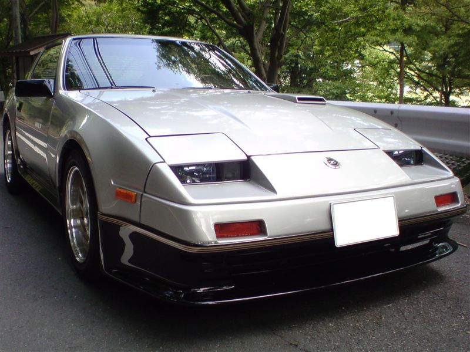
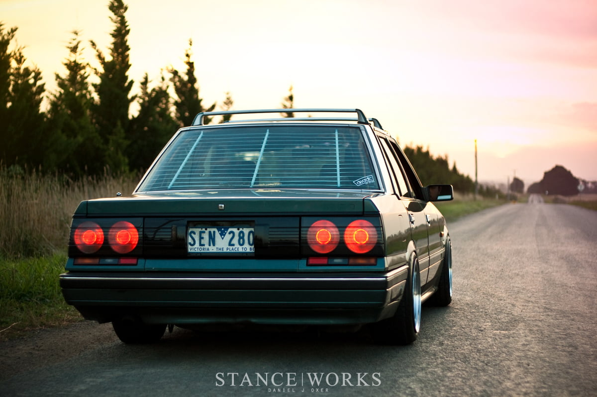

-
Zenki turbo is the best looking..stock for stock especially. Koukis are meh without an aftermarket lip. IMO- VG30DET (HE341) 86 300ZX - 1982 280ZX Turbo - Headered NA 1986 300ZX 2+2 - 2000 Xterra - -
.Ven;340355 wrote: I mean it's ok. LOL If anything it's really the wheels that make it stand out. Put those same wheels on a CHUKI and then see which car is really sex. rofl -
Both designs have their own uniqueness about them. The Kouki is curvy, has wide hips, refined feel and can be pulled towards a more updated aftermarket (ie big wheels/low profile tires, front lip ect…). Zenkis have sharp lines, boxiness, and very nostalgic feel and to me look best when keeping towards that 80s early 90s theme similar to what the AE86 provides. Looks best when keeping to era specific look (refined 15-16 wheels, with little bit of meat on the tires ect…)
Now I have seen fine examples of both, even modified outside of those specifications… but the devil is always in the details. Shaved front bumper, JDS wheels… no one can argue that isnt a good looking zenki.86na - BlueZ
Shiro #366 - Kouki Monster
85t - Mr Tickles -
I like old-school 80s style y0adamvann3;340454 wrote: Both designs have their own uniqueness about them. The Kouki is curvy, has wide hips, refined feel and can be pulled towards a more updated aftermarket (ie big wheels/low profile tires, front lip ect…). Zenkis have sharp lines, boxiness, and very nostalgic feel and to me look best when keeping towards that 80s early 90s theme similar to what the AE86 provides. Looks best when keeping to era specific look (refined 15-16 wheels, with little bit of meat on the tires ect…)
Now I have seen fine examples of both, even modified outside of those specifications… but the devil is always in the details. Shaved front bumper, JDS wheels… no one can argue that isnt a good looking zenki.- VG30DET (HE341) 86 300ZX - 1982 280ZX Turbo - Headered NA 1986 300ZX 2+2 - 2000 Xterra - -
Stock for stock the 88 SS is the best looking Z31 IMO since it came with a factory lip.michaelp;340429 wrote: Zenki turbo is the best looking..stock for stock especially. Koukis are meh without an aftermarket lip. IMO -
Ugly wheels are ugly though. 86Ts have the best stock wheels, lip, fascia, tail lights, side skirts....lol :P IMOVen;340560 wrote: Stock for stock the 88 SS is the best looking Z31 IMO since it came with a factory lip.- VG30DET (HE341) 86 300ZX - 1982 280ZX Turbo - Headered NA 1986 300ZX 2+2 - 2000 Xterra - -
Those are the best stock wheels LOL (the German ones). The sideskirt is goes perfectly with the lip and I like how it goes up the side of the car. The car is lowered and that's it.
Lets not even start on the fog lights and front fascia. HAHA -
JDS wheels look out of place on a Kouki, IMO. The spokes are sharply cut and angled, much like the body lines of a Zenki.
Kinda pointless to repeatedly claim that a Kouki is the best looking Z31 in a Zenki thread, don't you think?Ven;340560 wrote: Stock for stock the 88 SS is the best looking Z31 IMO since it came with a factory lip.'86 300ZXT GLL
'78 Datsun 280Z BP
'11 Saab 9-3 Aero XWD -
Those are JDS wheels…they werent stock on any Nissan ever. They're aftermarket.Ven;340563 wrote:
Those are the best stock wheels LOL (the German ones). The sideskirt is goes perfectly with the lip and I like how it goes up the side of the car. The car is lowered and that's it.
Lets not even start on the fog lights and front fascia. HAHA- VG30DET (HE341) 86 300ZX - 1982 280ZX Turbo - Headered NA 1986 300ZX 2+2 - 2000 Xterra - -
I thought some of the Germany Z31s were sold with them? Aren't they known as JDS OEM wheels? -
You just thought that up? lol.
They are OEM wheels recreated by Japan Datsun Service.
Someone posted here that they were once OEM wheels that were widened at one point.
Then they were recreated completely.
You can have almost any wheel widened if you go to the proper place. There is someone in Ontario who does it. -
This is relevant to my zenki interests, if you don't hafta dig out the entire interwebs to find out. adamvann did kinda nail it, zenkis look better if you keep them period-correct or very close to it.Careless;340574 wrote:
You can have almost any wheel widened if you go to the proper place. There is someone in Ontario who does it. -
http://www.carcone.com/wheel-refinishing.html?tabID=32FrozenZ;340613 wrote: This is relevant to my zenki interests, if you don't hafta dig out the entire interwebs to find out. adamvann did kinda nail it, zenkis look better if you keep them period-correct or very close to it.
carcone's used to do it. not sure if they do anymore. -
Been really digging the nostalgia of "inner louvers" lately. Very nice subltle 80s touch. My guess they are next to impossible to find anymore.adamvann3;320690 wrote:


Granted they dont look overly difficult to make your own.86na - BlueZ
Shiro #366 - Kouki Monster
85t - Mr Tickles -
I'm liking the inner louvers look also. The only application I've seen on a z31 is in a Japanese Z sales brochure. Until then, I didn't know they even made those. None of the USA sales brochures showed them. They remind me of Venetian Blinds .. I recall interior blinds fitted to station wagons and passenger vans in the 60s/70s …
The only thing I'd be wary of is the noise they'd make (rattles) just from the road traveling …
Then again, paper or plastic blinds "today" would cut down on the "noise" … .?


{kind=link}
Copyright © 2006–. All rights reserved. Privacy Policy